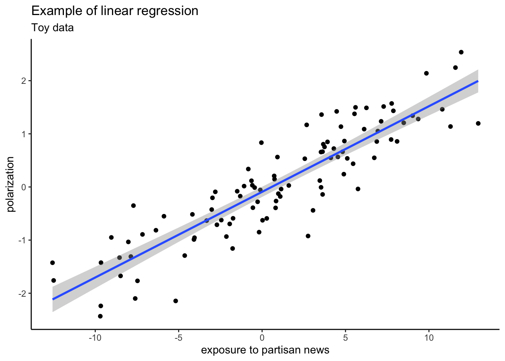

Introduction
This data analysis seminar focuses on linear regression analysis to explore questions about mediated and moderated effects, using the R statistical language, the Rstudio environment (https://www.rstudio.com) and the PROCESS software by Andrew F. Hayes (http://processmacro.org).
The course is divided into learning units.
The initial portion of the course focuses on reviewing the fundamental principles necessary for statistical analysis using data science tools R and Rstudio (https://www.rstudio.com). Students must be proficient in Rstudio’s interface and programming to use it for statistical analysis. To achieve the course’s objective, self-study and practice will be crucial.
Additionally, the introductory part of the course provides a concise overview of linear regression’s basic principles and the setup of R and PROCESS for statistical analysis. We delve into multiple regression analysis and its principles to comprehend how to fit, visualize, interpret, and evaluate multiple regression models using R.
We’ll use linear regression models to answer questions of the WHETHER or IF variety. These questions revolve around the relationship between variables. For instance, does a variable Y have a correlation with another variable X, or perhaps with multiple other variables? For example, we can utilize this type of analysis to investigate if there’s a connection between an increase in exposure to partisan news media and polarization.

We subsequently concentrate on mediation analysis, examining how to construct, depict, comprehend, and evaluate mediation models utilizing PROCESS within the R framework. Mediation analysis is concerned with questions of the HOW variety, and is utilized to investigate the mechanism(s) that explain how one or more variables affect another.
For instance, suppose we have established a correlation between the use of violent video games and the frequency of offline assaults. The subsequent step might be to examine how this association occurs, utilizing mediation analysis to investigate the potential mechanism through which violent video games influence offline aggressive behavior.
Afterward, we concentrate on moderation analysis, discovering how to build, depict, comprehend, and evaluate moderation models using PROCESS in the R environment. Moderation analysis is employed to address questions of the WHEN variety, or regarding the conditions or contingencies of an association, that is to say, when a correlation between variables exists.
For instance, there’s no justification to assume that the correlation between violent video games and offline aggression is all-encompassing. Perhaps, it’s more robust for males than females, or the correlation’s strength is dependent on personality traits. We use moderation analysis to address such questions.
Lastly, we concentrate on conditional process analysis, demonstrating how to construct, depict, comprehend, and evaluate conditional process models using PROCESS in the R environment. Conditional process refers to the circumstances or conditions of the mechanisms through which one variable affects another, encompassing both mediation and moderation analysis.
Conditional process models allow to address the complexity of social science phenomena.
The last part of the course is dedicated to the project work.
By the conclusion of this course, students should be proficient in:
Executing and comprehending the outcomes of linear regression, moderation, mediation, and conditional process models.
Statistically testing competing theories of mechanisms through the evaluation of indirect effects in models that encompass multiple mediators.
Representing and investigating interactions in regression models to accurately interpret interaction effects.
Calculating and inferring about conditional indirect effects to estimate the contingencies of mechanisms.
Utilizing the R language and PROCESS to conduct, depict, and comprehend linear regression, moderation, mediation, and conditional process models.
The handbook of the course and the primary source of most of the material here presented is:
Andrew F. Hayes. Introduction to Mediation, Moderation, and Conditional Process Analysis. A Regression-Based Approach. 2018. SECOND EDITION. THE GUILFORD PRESS, New York, London.